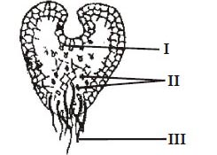
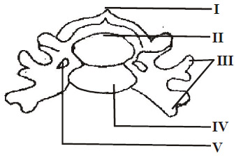

Click here to start

|
1 2 3 4 5 6 7 8 9 10 11 12 13 14 15 16 17 18 19 20 21 22 23 24 25 26 27 28 29 30 31 32 33 34 35 36 37 38 39 40 41 42 43 44 45 46 47 48 49 50
|
1. Water fleas, wood lice and barnacles belong to the group
x.png) insecta
insecta
x.png)
chilopoda
x.png)
crustacea
-if-lighter.png)
arachnida.
2. Which of the following organisms does not
exist as a single free living cell?
volvox
amoeba
chlamydomonas
paramecium.
3. An association between the root nodule of
a leguminous plant and Rhizobium sp. is
known as
parasitism
symbiosis
commensalism
mycorrhiza.
4. Which of the following groups is the most
advanced?
Thallophytes
Pteridophytes
Gymnosperms
Bryophytes.
5. The mode of feeding in Amoeba and Hydra
is
autotrophic
heterotrophic
symbiotic
holophytic.
6. Viviparity occurs mainly in the
aves
amphibians
mammals
reptiles.
Use the diagram below to answer questions 7
and 8.
 7. In ferns, the structure above is equivalent to the
gametophyte generation of a moss
sporophyte generation of a moss
sporangium of a moss
zygote of a moss.
Use the diagram below to answer questions 7
and 8.
8. The structures labeled II and III respectively are
sporophyte and sori
annulus and stalk of sporangium
female organs and rhizoid
male organs and rhizoid.
9. Most monocots are easily recognized by
their
long and sword-like leaves
long and palm-like leaves
short leaves with petioles
short leaves with many veinlets.
10. Amphibians are normally found
in water
on moist land
in water and moist land
on dry land and in water.
11. The jointed structure in insects that bears
organs which are sensitive to touch, smell
and vibration is the
antenna
abdomen
maxilla
labium.
12. The veins of the leaf are formed by the
spongy mesophyll
palisade tissue
cambium cells
vascular bundles.
13. When specimen X is mixed with few drops
of iodine solution, the appearance of a
blue-black colour confirms X is
sucrose
glucose
starch
galactose.
14. The enzyme invertase will hydrolyze
sucrose to give
mannose and galactose
glucose and fructose
maltose and glucose
glycerol and fatty acid.
15. Salts and water are absorbed in the roots
and transported to the leaves by
osmosis through the phloem tissues
diffusion through the phloem tissues
osmosis through the xylem tissues
diffusion through the xylem tissues.
16. The transportation of oxygen and carbon
(IV) oxide in mammals is carried out by
phagocytes
leucocytes
erythrocytes
thrombocytes.
17. The gas produced during tissues respiration
can be identified by using
sodium hydroxide
calcium carbonate
copper sulphate
calcium hydroxide.
18. When yeast respires anaerobically it
converts simple sugars to carbon (IV) oxide
and
acid
water
oxygen
alcohol.
19. Urea formation occurs in the
liver
kidney
heart
lung.
Use the diagram below to answer questions
20 and 21.
 20. The structure above represents a
thoracic vertebra
cervical vertebra
caudal vertebra
lumbar vertebra.
Use the diagram below to answer questions
20 and 21.
21. Blood vessels usually pass through the structure labelled
II
III
IV
V
Use the diagram below to answer questions 22 and 23.
 22. The part labeled IV is the
yolk
air space
albumen
germinal disc
Use the diagram below to answer questions 22 and 23.
23. The structure that holds the yolk in position is labelled
I
II
III
IV
24. A seedling grown in the dark is likely to be
sturdy
stunted
dormant
etiolated.
Use the diagram below to answer questions
25 and 26.
 25. The part labelled II is the
internal auditory meatus
fenestra ovalis
ear ossicles
middle ear canal
Use the diagram below to answer questions
25 and 26.
26. The parts which function together to bring about hearing are labelled
I, II and IV
I, II, III and IV
I, II, IV and VI
IV, V and VI.
27. The center for learning and memory in the
human brain is the
olfactory lobe
cerebrum
medulla oblongata
cerebellum.
28. The physical space occupied by an organism
together with its functional role in the community can be described as
niche
environment
habitat
biome.
29. The hygrometer is used for measuring
rainfall
relative humidity
salinity
specific gravity.
30. The highest percentage of energy in an ecosystem occurs at level of the
producers
primary consumers
secondary consumers
decomposer.
31. Carbon (IV) oxide content of the atmosphere is least affected by
burning of fossil fuel
cutting down and clearing of forests
plant and animal respiration
forest fires.
32. A freshwater pond may contain
pond skater, water lily, shark and mosquito larva
water lily, fish water scorpion and dragonfly larva
tad pole, water boatman, leeches and crab
water beetle, shrimps, water snail and water bug.
33. The epiphytic habitat can best be described as
aquatic
terrestrial
arboreal
estuarine.
34. The distribution of plants in a rain forest is governed mainly by
rainfall pattern
vegetation
soil types
amount of sunlight.
35. The number of plant species obtained from a population study of a garden is as follows;
Guinea grass (15), Ipomea spp. (5) Sida spp (7) and Imperata spp. (23). What is the percentage of occurrence of Imperata spp.?
16%
23%
35%
46%
36. The greatest influence on a stable ecosystem in nature is excreted by
rainfall
animals
man
pollution.
37. The factor the least affects food shortage in sub-saharan Africa is
drought
flooding
pests
mixed – cropping.
38. In man, the ability to roll the tongue is a variation classified as
structural
morphological
anatomical
physiological.
39. Which of the following statements is true of blood groups and blood transfusion?
Group A can donate to group A only
Group B can donate to group B only
Group O is the universal recipient
Group AB is the universal recipient.
40. A tall plant crossed with a dwarf one produces offspring of which half are tall and half are dwarf. What are the genotypes of the parents?
Tt, tt
TT, tt
Tt, Tt
TT, TT.
41. Both recessive and dominant characters are found
at the same locus of a homologous chromosome
at different loci of homologous chromosome
on different chromosomes in the cell
on the same chromatid in a chromosome.
42. Which of the following is likely to encourage
inbreeding in plants
monoecious
dioecious
hermaphrodite
protandrous.
43. The probability of a baby being a boy or a girl depends on the contribution of the
mother’s sex cell
mother’s X chromosome
father’s sex cell
father’s somatic chromosome.
44. The ability of an organism to live successfully in an environment is known as
succession
resistance
adaptation
competition.
45. For heterotrophic organisms, competition is least caused by inadequacy of
nutrients
light
space
mates.
46. The most important adaptation of xerophytes is the ability of the protoplasm to
absorb water and swell
resist being damaged by loss
shrink from the cell wall
store sugar and minerals in the vacuoles.
47. The stem of a typical aquatic plant usually has many
water cavities
water-conducting cells
air cavities
intercellular spaces.
48. A green snake in green grass is able to escape notice from predators because of its
warning colouration
disruptive colouration
cryptic colouration
countershading.
49. The role of the male adult honey bee is to
mate with the queen
care for the young
clean the hive
ventilate the hive.
50. Darwin is considered the first scientist who correctly explained the theory of
organic evolution
use and disuse
special creation
spontaneous generation.
|
| remark |
|---|